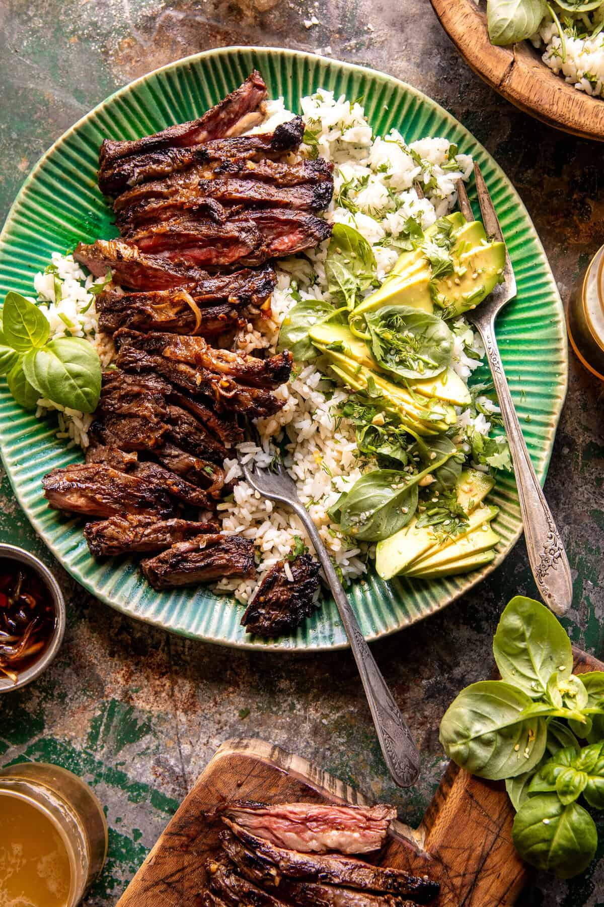

Herby Lemon Garlic Steak And Rice

About the recipe
30 Minute Herby Lemon Garlic Steak and Rice. This yummy bowl is quick and
easy for warm spring and summer nights. The beef is made with fresh lemon,
garlic, shallots, and oregano and grilled until lightly charred around the
edges. Serve the sliced steak over a bowl of herby avocado rice with extra
sauce on top. Be generous with the sauce; it makes the steak so delicious!
Ingredients
Rice
Method
-
In a bowl, toss together the steak, olive oil, lemon juice, balsamic
vinegar, garlic, honey, oregano, chili flakes, and a big pinch of salt.
Mix well to coat/submerge the steak in the marinade. If time allows,
marinate for 20 mins.
-
Set your grill, grill pan, or skillet to medium-high heat. Grill the
steak until lightly charred, 5-8 minutes for medium-rare, per side.
Remove the steaks and allow them to rest for 5-10 minutes.
-
Meanwhile, simmer any leftover marinade in a small pot set over medium
heat for 5-10 minutes. Set aside for serving.
-
To make the rice. Mix all ingredients in a bowl and season to taste with
salt and pepper.
-
Spoon the reserved sauce over the slices of steak, then serve the steak
over plates or bowls of herby rice. Top with avocado. Enjoy!
Back to index
Original recipe can be found
here, it's not actually mine.